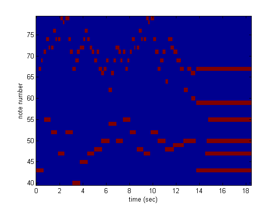
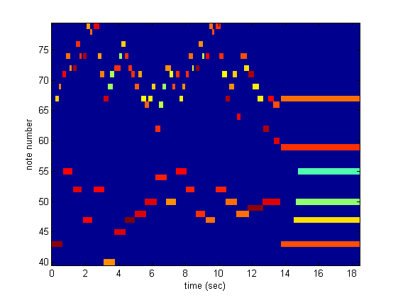

Contents
midi = readmidi('jesu.mid');
[y,Fs] = midi2audio(midi);
listen in matlab:
soundsc(y, Fs);
y = midi2audio(midi, Fs, 'sine');
soundsc(y,Fs);
y = midi2audio(midi, Fs, 'saw');
soundsc(y,Fs);
y = .95.*y./max(abs(y));
wavwrite(y, Fs, 'out.wav');
just display info:
midiInfo(midi);
--------------------------------------------------
Track 1
--------------------------------------------------
- 0 0:0.000 meta Set Tempo microsec per quarter note: 500000
- 0 0:0.000 meta Time Signature 4/2, clock ticks and notated 32nd notes=24/8
0 751 0:0.978 Note on nn=43 vel=99
0 171 0:1.201 Note on nn=67 vel=68
0 133 0:1.374 Note on nn=67 vel=0
0 29 0:1.411 Note on nn=69 vel=75
0 91 0:1.530 Note on nn=69 vel=0
0 63 0:1.612 Note on nn=43 vel=0
0 10 0:1.625 Note on nn=71 vel=88
0 8 0:1.635 Note on nn=55 vel=88
0 144 0:1.823 Note on nn=74 vel=78
0 3 0:1.827 Note on nn=71 vel=0
0 155 0:2.029 Note on nn=72 vel=74
0 25 0:2.061 Note on nn=74 vel=0
0 68 0:2.150 Note on nn=72 vel=0
0 37 0:2.198 Note on nn=55 vel=0
0 36 0:2.245 Note on nn=72 vel=97
0 13 0:2.262 Note on nn=52 vel=92
0 126 0:2.426 Note on nn=76 vel=84
0 7 0:2.435 Note on nn=72 vel=0
0 169 0:2.655 Note on nn=74 vel=84
0 29 0:2.693 Note on nn=76 vel=0
0 52 0:2.760 Note on nn=74 vel=0
0 1 0:2.762 Note on nn=52 vel=0
0 72 0:2.855 Note on nn=74 vel=97
0 6 0:2.863 Note on nn=47 vel=88
0 141 0:3.047 Note on nn=79 vel=73
0 1 0:3.048 Note on nn=74 vel=0
0 153 0:3.247 Note on nn=79 vel=0
0 21 0:3.275 Note on nn=78 vel=78
0 83 0:3.383 Note on nn=78 vel=0
0 23 0:3.413 Note on nn=47 vel=0
0 43 0:3.469 Note on nn=52 vel=88
0 10 0:3.482 Note on nn=79 vel=90
0 199 0:3.741 Note on nn=74 vel=73
0 66 0:3.827 Note on nn=79 vel=0
0 30 0:3.866 Note on nn=71 vel=75
0 60 0:3.944 Note on nn=74 vel=0
0 99 0:4.073 Note on nn=40 vel=74
0 11 0:4.087 Note on nn=67 vel=94
0 11 0:4.102 Note on nn=52 vel=0
0 7 0:4.111 Note on nn=71 vel=0
0 188 0:4.355 Note on nn=69 vel=54
0 26 0:4.389 Note on nn=67 vel=0
0 70 0:4.480 Note on nn=71 vel=55
0 101 0:4.612 Note on nn=69 vel=0
0 81 0:4.717 Note on nn=71 vel=0
0 4 0:4.723 Note on nn=45 vel=92
0 7 0:4.732 Note on nn=72 vel=83
0 25 0:4.764 Note on nn=40 vel=0
0 196 0:5.020 Note on nn=74 vel=54
0 41 0:5.073 Note on nn=72 vel=0
0 46 0:5.133 Note on nn=76 vel=67
0 25 0:5.165 Note on nn=74 vel=0
0 137 0:5.344 Note on nn=74 vel=84
0 5 0:5.350 Note on nn=47 vel=102
0 35 0:5.396 Note on nn=76 vel=0
0 3 0:5.400 Note on nn=45 vel=0
0 117 0:5.552 Note on nn=74 vel=0
0 3 0:5.556 Note on nn=72 vel=83
0 143 0:5.742 Note on nn=71 vel=83
0 22 0:5.771 Note on nn=72 vel=0
0 136 0:5.948 Note on nn=48 vel=92
0 3 0:5.952 Note on nn=71 vel=0
0 5 0:5.958 Note on nn=69 vel=79
0 1 0:5.960 Note on nn=47 vel=0
0 154 0:6.160 Note on nn=71 vel=72
0 19 0:6.185 Note on nn=69 vel=0
0 127 0:6.350 Note on nn=67 vel=63
0 12 0:6.366 Note on nn=71 vel=0
0 154 0:6.566 Note on nn=66 vel=79
0 2 0:6.569 Note on nn=50 vel=92
0 33 0:6.612 Note on nn=67 vel=0
0 25 0:6.645 Note on nn=48 vel=0
0 96 0:6.770 Note on nn=67 vel=64
0 24 0:6.801 Note on nn=66 vel=0
0 131 0:6.971 Note on nn=69 vel=68
0 46 0:7.031 Note on nn=67 vel=0
0 121 0:7.189 Note on nn=62 vel=83
0 6 0:7.197 Note on nn=54 vel=86
0 3 0:7.201 Note on nn=69 vel=0
0 34 0:7.245 Note on nn=50 vel=0
0 116 0:7.396 Note on nn=66 vel=56
0 51 0:7.462 Note on nn=62 vel=0
0 106 0:7.600 Note on nn=69 vel=54
0 40 0:7.652 Note on nn=66 vel=0
0 108 0:7.793 Note on nn=72 vel=74
0 22 0:7.822 Note on nn=50 vel=74
0 1 0:7.823 Note on nn=69 vel=0
0 17 0:7.845 Note on nn=54 vel=0
0 147 0:8.036 Note on nn=71 vel=61
0 54 0:8.107 Note on nn=72 vel=0
0 72 0:8.201 Note on nn=69 vel=81
0 28 0:8.237 Note on nn=71 vel=0
0 116 0:8.388 Note on nn=69 vel=0
0 12 0:8.404 Note on nn=71 vel=84
0 20 0:8.430 Note on nn=50 vel=0
0 6 0:8.437 Note on nn=55 vel=88
0 139 0:8.618 Note on nn=67 vel=65
0 14 0:8.637 Note on nn=71 vel=0
0 133 0:8.810 Note on nn=69 vel=74
0 37 0:8.858 Note on nn=67 vel=0
0 96 0:8.983 Note on nn=69 vel=0
0 22 0:9.012 Note on nn=71 vel=84
0 11 0:9.026 Note on nn=52 vel=86
0 21 0:9.053 Note on nn=55 vel=0
0 110 0:9.197 Note on nn=71 vel=0
0 7 0:9.206 Note on nn=74 vel=77
0 145 0:9.395 Note on nn=72 vel=61
0 39 0:9.445 Note on nn=74 vel=0
0 42 0:9.500 Note on nn=72 vel=0
0 31 0:9.540 Note on nn=52 vel=0
0 47 0:9.602 Note on nn=72 vel=99
0 1 0:9.603 Note on nn=48 vel=84
0 143 0:9.789 Note on nn=76 vel=74
0 7 0:9.798 Note on nn=72 vel=0
0 138 0:9.978 Note on nn=74 vel=55
0 31 0:10.018 Note on nn=76 vel=0
0 60 0:10.096 Note on nn=74 vel=0
0 53 0:10.165 Note on nn=48 vel=0
0 22 0:10.194 Note on nn=47 vel=78
0 5 0:10.201 Note on nn=74 vel=88
0 156 0:10.404 Note on nn=74 vel=0
0 2 0:10.406 Note on nn=79 vel=77
0 144 0:10.594 Note on nn=78 vel=81
0 21 0:10.621 Note on nn=79 vel=0
0 70 0:10.712 Note on nn=78 vel=0
0 39 0:10.763 Note on nn=47 vel=0
0 29 0:10.801 Note on nn=52 vel=86
0 9 0:10.813 Note on nn=79 vel=83
0 157 0:11.017 Note on nn=74 vel=83
0 43 0:11.073 Note on nn=79 vel=0
0 87 0:11.186 Note on nn=71 vel=63
0 48 0:11.249 Note on nn=74 vel=0
0 114 0:11.397 Note on nn=50 vel=78
0 15 0:11.417 Note on nn=67 vel=97
0 20 0:11.443 Note on nn=52 vel=0
0 20 0:11.469 Note on nn=71 vel=0
0 122 0:11.628 Note on nn=69 vel=74
0 33 0:11.671 Note on nn=67 vel=0
0 128 0:11.837 Note on nn=71 vel=67
0 52 0:11.905 Note on nn=69 vel=0
0 114 0:12.053 Note on nn=48 vel=78
0 8 0:12.064 Note on nn=71 vel=0
0 5 0:12.070 Note on nn=64 vel=90
0 15 0:12.090 Note on nn=50 vel=0
0 146 0:12.280 Note on nn=74 vel=81
0 6 0:12.288 Note on nn=64 vel=0
0 185 0:12.529 Note on nn=72 vel=66
0 101 0:12.660 Note on nn=74 vel=0
0 62 0:12.741 Note on nn=49 vel=99
0 9 0:12.753 Note on nn=71 vel=97
0 34 0:12.797 Note on nn=48 vel=0
0 13 0:12.814 Note on nn=72 vel=0
0 173 0:13.039 Note on nn=69 vel=65
0 52 0:13.107 Note on nn=71 vel=0
0 176 0:13.336 Note on nn=67 vel=64
0 45 0:13.395 Note on nn=69 vel=0
0 164 0:13.608 Note on nn=50 vel=92
0 26 0:13.642 Note on nn=62 vel=97
0 4 0:13.647 Note on nn=49 vel=0
0 17 0:13.669 Note on nn=67 vel=0
0 205 0:13.936 Note on nn=67 vel=88
0 34 0:13.980 Note on nn=62 vel=0
0 218 0:14.264 Note on nn=66 vel=81
0 11 0:14.279 Note on nn=67 vel=0
0 1 0:14.280 Note on nn=60 vel=92
0 252 0:14.608 Note on nn=60 vel=0
0 20 0:14.634 Note on nn=66 vel=0
0 20 0:14.660 Note on nn=50 vel=0
0 35 0:14.706 Note on nn=67 vel=77
0 11 0:14.720 Note on nn=43 vel=81
0 1 0:14.721 Note on nn=59 vel=84
0 593 0:15.493 Note on nn=47 vel=66
0 90 0:15.611 Note on nn=50 vel=52
0 101 0:15.742 Note on nn=55 vel=45
0 2851 0:19.454 Note on nn=47 vel=0
0 3 0:19.458 Note on nn=55 vel=0
0 3 0:19.462 Note on nn=50 vel=0
0 2 0:19.465 Note on nn=43 vel=0
0 3 0:19.469 Note on nn=67 vel=0
0 4 0:19.474 Note on nn=59 vel=0
- 1463 0:21.379 meta End of Track
convert to 'Notes' matrix:
Notes = midiInfo(midi,0);
compute piano-roll:
[PR,t,nn] = piano_roll(Notes);
display piano-roll:
figure;
imagesc(t,nn,PR);
axis xy;
xlabel('time (sec)');
ylabel('note number');

also, can do piano-roll showing velocity:
[PR,t,nn] = piano_roll(Notes,1);
figure;
imagesc(t,nn,PR);
axis xy;
xlabel('time (sec)');
ylabel('note number');
N = 13;
M = zeros(N,6);
M(:,1) = 1;
M(:,2) = 1;
M(:,3) = (60:72)';
M(:,4) = round(linspace(80,120,N))';
M(:,5) = (.5:.5:6.5)';
M(:,6) = M(:,5) + .5;
midi_new = matrix2midi(M);
writemidi(midi_new, 'testout.mid');
N = 200;
M = zeros(N,6);
M(:,1) = 1;
M(:,2) = 1;
M(:,3) = 30 + round(60*rand(N,1));
M(:,4) = 60 + round(40*rand(N,1));
M(:,5) = 10 * rand(N,1);
M(:,6) = M(:,5) + .2;
midi_new = matrix2midi(M);
writemidi(midi_new, 'testout2.mid');
